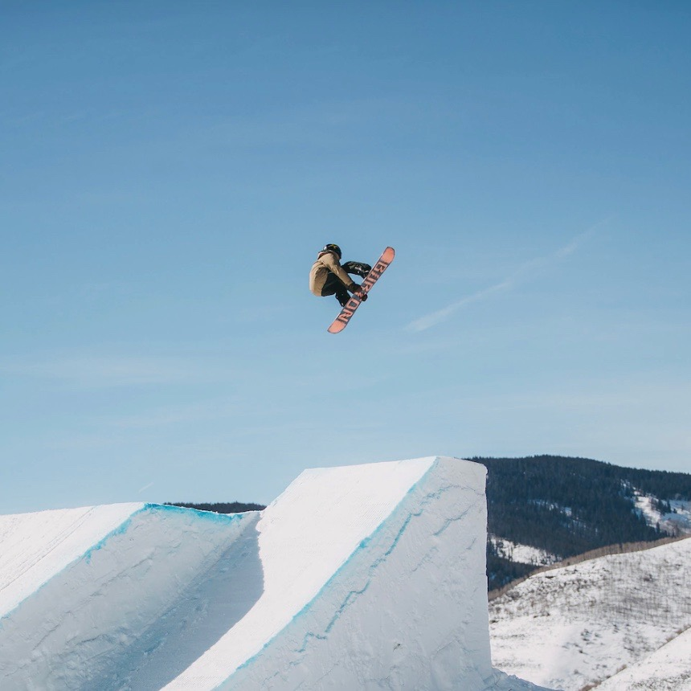
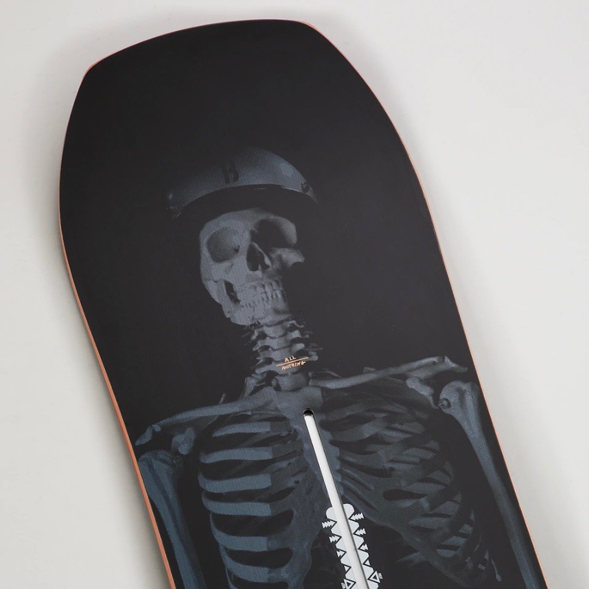
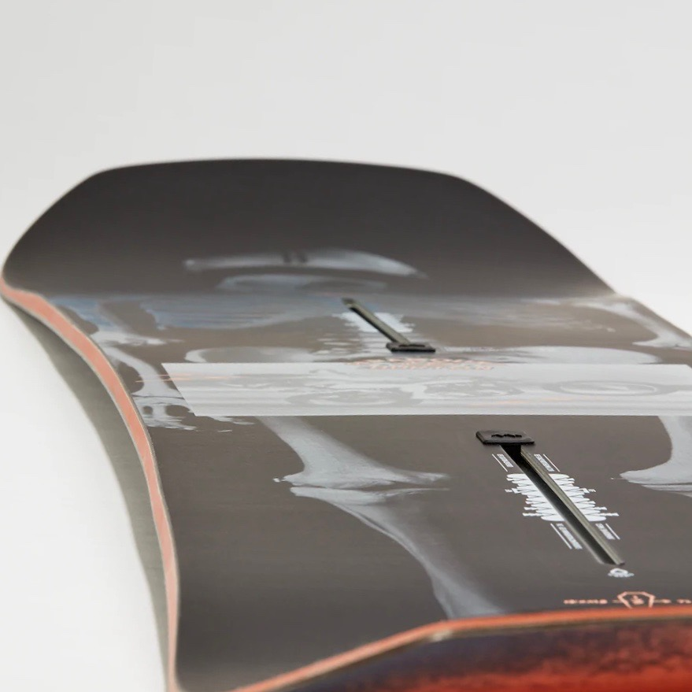

Freestyle snowboards are light, short and flexible, designed mainly for performing tricks in terrain parks and halfpipes. They have a limited edge grip and are not stable enough for carving turns and travelling fast. Some freestyle snowboards have either twin tips or directional- twin. The tip and tail of the twin tip board is symmetrical in shape with a centered stance. This design makes it easier for beginners to ride both forward and backward. The directional- twin, on the other hand, is similar to the twin tip with the only difference being the tail, which is stiffer than the tip.
  